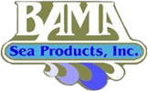
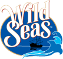

Products
Bama’s buyers follow the U.S. fleet fishing from Texas to North Carolina, off-loading domestic shrimp at facilities throughout the Gulf of Mexico. Bama has also established relationships and shrimp programs with suppliers from around the globe with imports from Ecuador, Peru, India & Indonesia. Working with SGS and BRC audited plants in those countries, and with our own on-site inspectors, we continue to expand our shrimp purchasing in South America. Our long time relationships throughout Asia afford us the ability to be a true “Global Sourcing” company.
Product of U.S.A. Shrimp
Bama guarantees that our shrimp are “The Cream of the Catch.”
Our wild shrimp are caught in US waters and, because their diet consists of all natural proteins, the shrimp have a flavor and texture second to none.
The shrimp are purchased from American owned vessels and processed at one of four packing facilities strategically located along the Gulf Coast, including our GFSI certified plant in St. Petersburg. The majority of our shrimp are packed to Grade A standards assuring that our customers get the best quality, uniformity, yield, and texture possible. Bama has our own QC staff at each facility during production. The product is then shipped to our St. Petersburg plant where it undergoes an exacting quality check before being approved for sale. With our ability to grade, pack, peel, bread, cook, par fry and IQF shrimp we can assure that we have the product you need in the form and pack you need on a year round basis. We have the ability to pack in our own brands or our customer’s private label.

Bama Brand – Our premium Wild Caught shrimp that are packed to Grade A equivalent specifications, our Bama Brand shrimp products are truly the “Cream of the Catch”. Our quality specifications are considered the most stringent of any shrimp packer throughout the Gulf of Mexico.

Wild Seas – Wild Sea’s Brand is packed to premium, Grade A equivalent specifications. This wild caught product is packaged into a retail ready, high quality, 1 or 2 lb bag. Wild Sea’s is widely recognized as a premium pack for any retail application and distributed throughout the country to some of the largest retail chains in the U.S.A.